Electrophilic Addition to Alkynes
As a general rule, electrophiles undergo addition reactions with alkynes much as they do with alkenes. Take the reaction of alkynes with HX, for instance. The reaction often can be stopped after addition of 1 equivalent of HX, but reaction with an excess of HX leads to a dihalide product. For example, reaction of 1-hexyne with 2 equivalents of HBr yields 2,2-dibromohexane. As the following examples indicate, the regiochemistry of addition follows Markovnikov’s rule, with halogen adding to the more highly substituted side of the alkyne bond and hydrogen adding to the less highly substituted side. Trans stereochemistry of H and X normally, although not always, results in the product.
| 1-Hexyne | HBr ⟶ | 2-Bromo-1-hexene | HBr ⟶ | 2,2-Dibromohexane |
Mechanism
Step 1: Make a new bond between a nucleophile (π bond) and an electrophile— add a proton Proton transfer from HBr to the alkyne gives a vinylic carbocation; the more stable 2° vinylic carbocation is formed in preference to the less stable 1° vinylic carbocation.
⟶
Alkynes are considerably less reactive toward most electrophilic additions than are alkenes. The major reason for this difference is the instability of the sp-hybridized vinylic carbocation intermediate formed from an alkyne compared with the sp2 - hybridized alkyl carbocation formed from an alkene. As a rule, a secondary vinylic carbocation forms about as readily as a primary alkyl carbocation, but a primary vinylic carbocation is so difficult to form that there is no clear evidence it even exists. Thus, many alkyne additions occur through more complex mechanistic pathways.